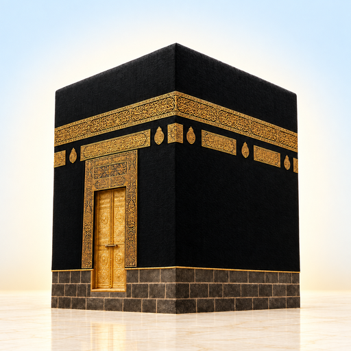
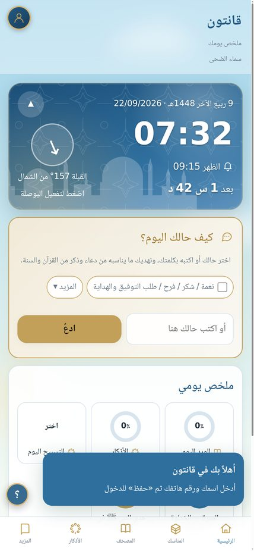
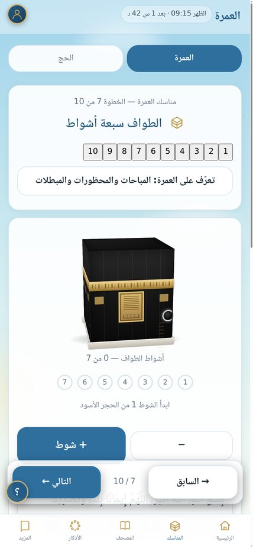
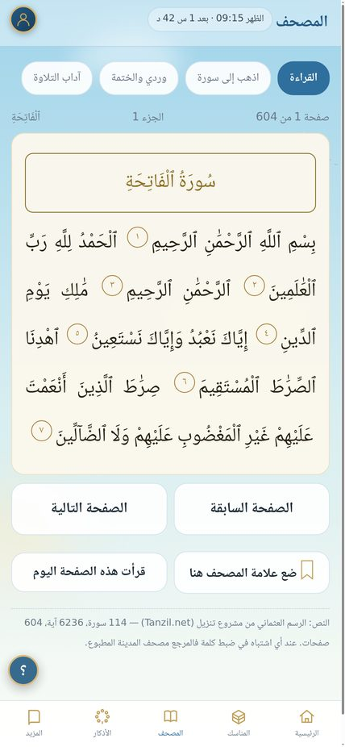
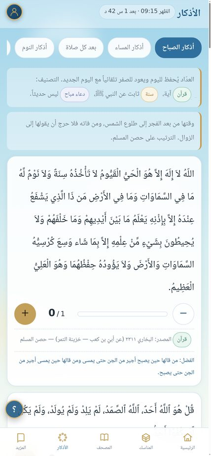
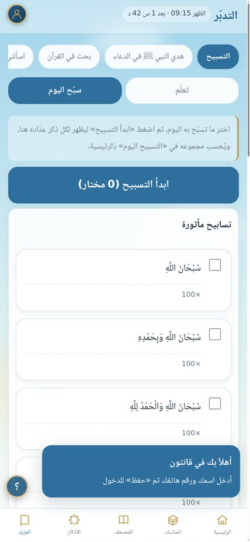

مرافقك في العمرة والحج والذكر — يعمل بالكامل دون إنترنت





مسار مستقل للعمرة وللحج من الإحرام إلى التحلل، مع عدّاد لأشواط الطواف والسعي ودعاء كل مرحلة.
604 صفحات بالرسم العثماني، علامة مرجعية، خطة ختمة، وبحث بالكلمة والموضوع.
أذكار الصباح والمساء وبعد الصلاة والنوم والجمعة مع عدّاد، وأدعية من القرآن والسنة مصنّفة حسب الحالة مع ذكر المصدر.
حسب موقعك، مع تذكيرات يومية قابلة للتخصيص وأوقات الدعاء المستحبة.
لا يُرسل التطبيق بياناتك إلى أي جهة، وكل المحتوى محفوظ على جهازك.
واجهة عربية كاملة، ونسخة إنجليزية منفصلة تحافظ على النص العربي مع النطق والمعنى.
المحتوى الشرعي منقول من القرآن الكريم وكتب السنة مع بيان مصدر كل نص، دون اجتهاد أو تأليف. يُرجى مراجعة أهل العلم فيما يستشكل.